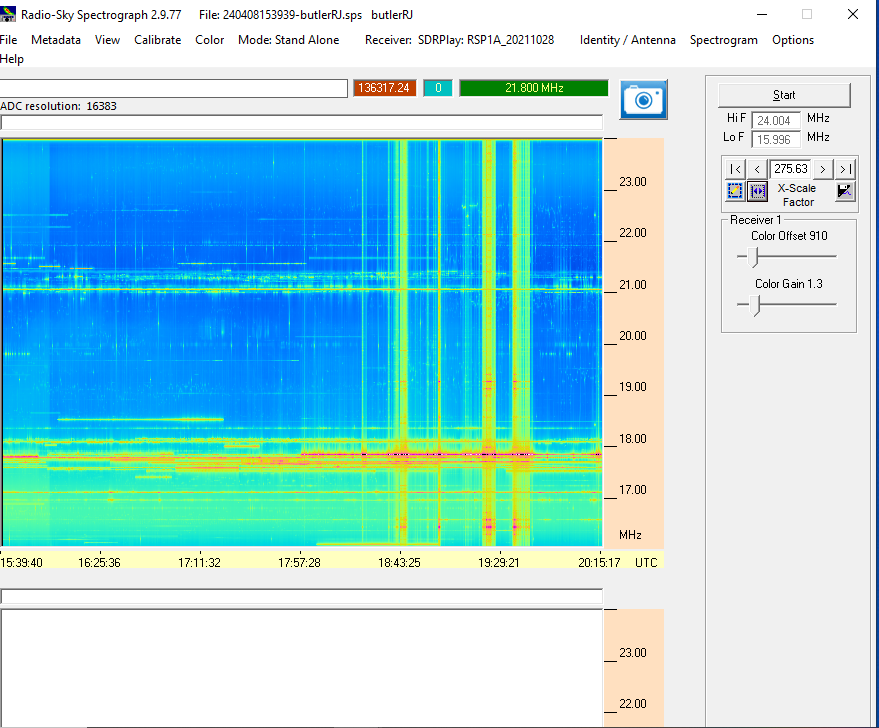

Preparation
to prepare, Radio Jove members had a number of observing practice sessions, which included observations and zoom meetings. Additionally, to prepare we had to take out the phasing cable of our dipoles (so that they were pointed at the zenith), and take multiple data points before and after the eclipse to compare to eclipse data. the data is in the table below.
Data
Below is the data during the practice sessions as well as the days leading up to, during the eclipse (in bold), and after the eclipse
| Date | Time | Spectrogram | Notes |
|---|---|---|---|
| 3/1/24 | 20:00-01:00 |

|
Not much color difference Shows antenna connected, sun setting so this is not sun Not sure if this is lack of signal (is something broken??) → the F connector was coming off. |
| 4/8/24 - ECLIPSE DAY | 11:19 AM - 4:15 PM (about) |

.png)
the first spectrogram shows entire observation, and the second shows emissions just during totality |
Strong emission starting right at the time of totality, noticeable solar flare under sun during totality → could be this |